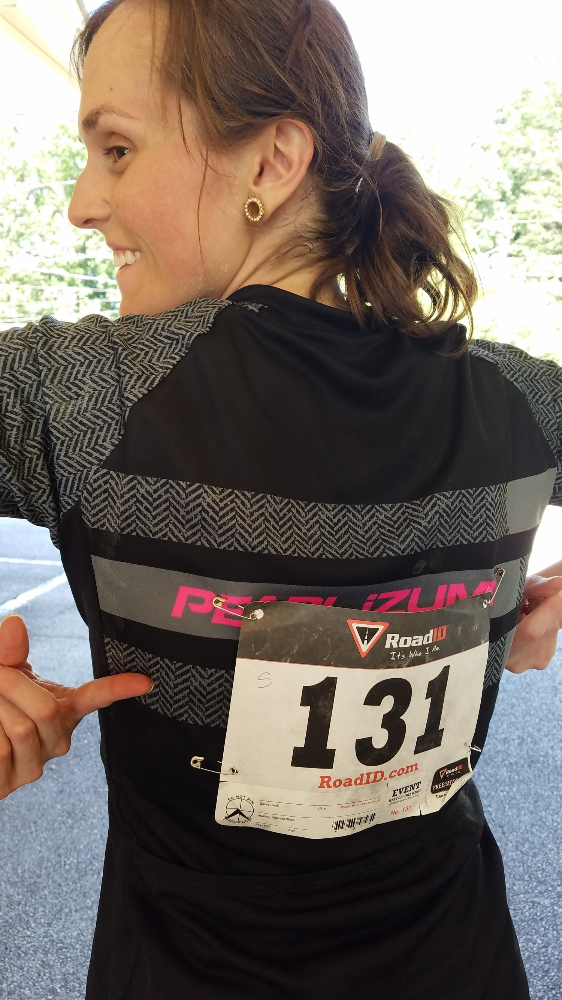
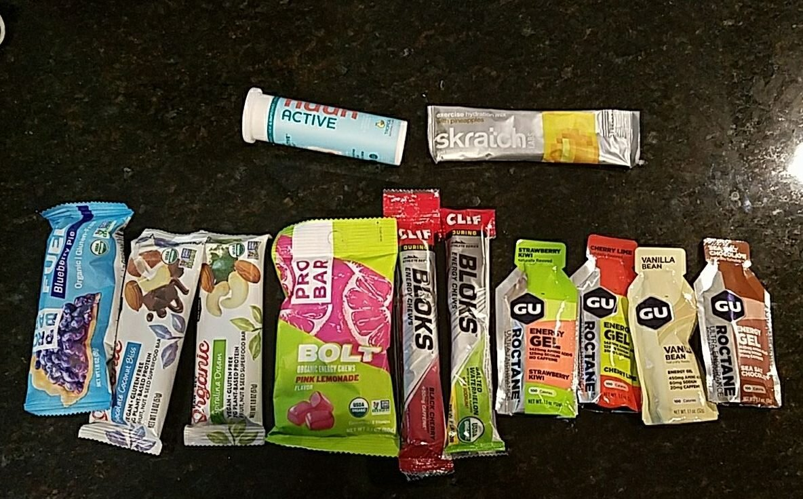
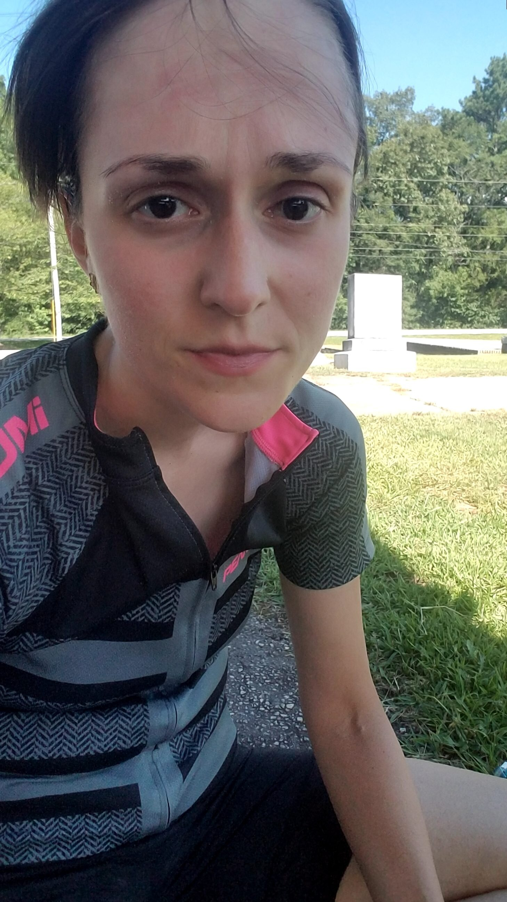
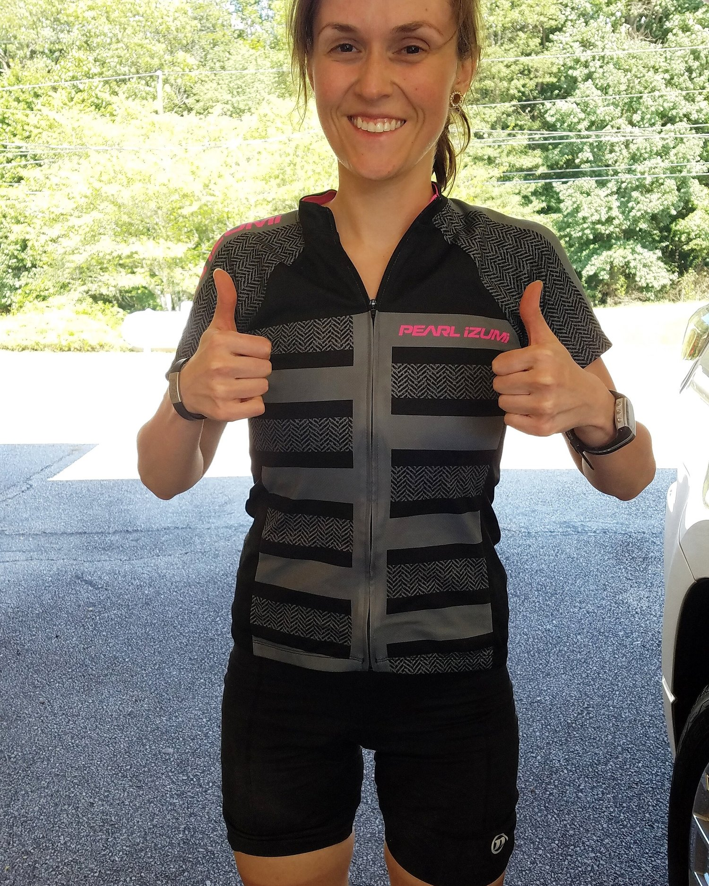
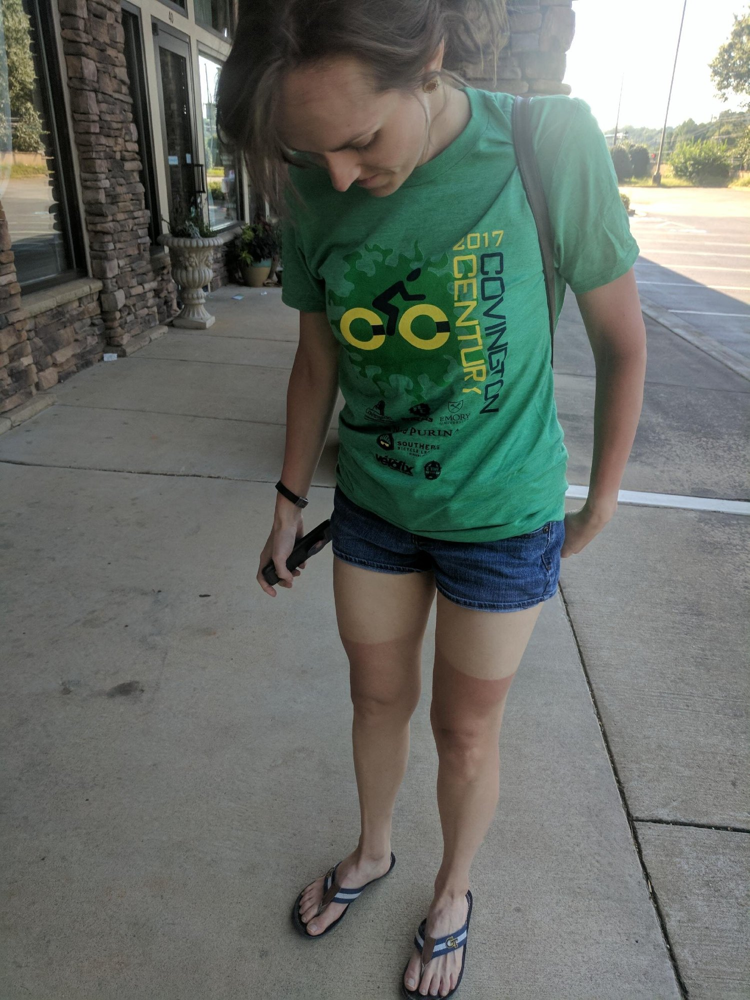

New Glasses and My First Century Ride!





Hiii guys! It's been a while since I sat down and wrote a blog post. I haven't gotten much time to myself so finding peace and quiet to write is difficult. I have been trying to video record big events, so this post will be supported a bit by those videos :)
I recently shared my new eyeglasses! I was a little hesitant to try them out, but I've really been wanting clear glasses frames so I figured I'd give it a go. I like to get my eyeglasses online from glassesshop.com because they don't require a prescription to be forwarded to them, as long as you know your prescription. Which I do! I also love this site since they have so many options and they always have some sort of sale going on. I figure - if I don't like a set, I don't really lose much and can try again since frames can be as cheap as $13!! They also don't feel cheap and I haven't had any break. It's great. I saw right now they have a BOGO sale with code "BSGOGO" - that's when I like to get two pairs at once! I'm not sure how long it lasts though. I think they code "GSHOT50" will always give 50% off a pair without the sale ending. I know they also have prescription sunglasses, but I haven't tried any of them out before.
Take a look at the pair I got on Youtube here :) I feel fanccyyyy. I got the pair called "Alice Oval - Crystal" if you want to get these! I like getting new glasses because I feel like it's always the start of a new era hahaha. Just me or?
If you watch the second half of that video, I recorded that right before my first century bike ride! 100 miles :o I sit here now, the day after the century, sore all over with a foggy brain. I apologize for any crazy typos or grammar. I'm sure this is riddled with them from my brain fog. I think the weirdest thing I could've never even anticipated feeling after the ride is...my esophagus is sore??? Not going to lie, I am mildly concerned about it. It hurts to swallow and kind of feels like something lodged in my airway. But I'll see what happens with time. I'm assuming its just from exerting energy for 8 hours straight with a minimum heart rate of 160. Check out this video for all my immediate post-ride thoughts. Glorious robe, wet hair, and all.
It feels amazing to set out and do a goal I made a year ago. Ride a 100 mile century bike ride. It was brutal, hot, my whole body was on fire by mile 60, and I felt every.single.mile.after. At 96 miles, a combination of direct sun (I'm dealing with the extreme burn today!) and constant hills cut my ride short; I began to black out. I did everything in my power; I just couldn't keep my heart rate or body temperature down. I'm not kidding when I say I couldn't EVER get my heart rate below 160. Not good at all - the goal was to maintain around 130. Ironic enough I pulled over at a church graveyard hahah. Whether I made the 100 mile marker or not, I was washed over by extreme emotion at the end. I couldn't hold back tears. I always think back to my younger self, who was embarrassed to run the mile in middle school because she couldn't make the 16 minute cut off. So unhealthy, self-conscious, and self-defeating. I still can't believe what I pushed myself to achieve, all while managing my fibromyalgia in recent years. I'm going to try again next year :) NOT in the smack dab middle of the Georgia summer and with less hills.
I think this was a great learning experience. You have to start somewhere, right? Considering my longest ride before this day was 55 miles...in shade...less hills...I'm so proud. I never could've imagined doing something like this. I feel like challenges like these are mostly mindset, and that, I for sure conquered. The self-defeating second nature I was born with was not going to take over. While that tries to slip up in my day to day, challenges like these remind me that it's all about what you believe you can do, then doing it. You can do anything. Unless...the sun physically puts you in a dangerous place. But I sure as heck tried. And I did the best I could with the circumstances. I was giggling to myself during the ride because from my 23 and me results, I am scientifically made better for sprints and short bursts of energy as opposed to marathons or long durations of exercise. So I was giggling like...why did I choose to do this ahahah. I'm not MADE for this. But it's just so fun :p
I'm...going back into recovery mode of just laying around for the rest of the day until work tomorrow. People keep telling me to spin out today and it'll help the soreness be diminished in the following days but I don't knowwww.. I'm still having muscle spasms and locking joints, so I just need to return to baseline I think. Here's a photo drop!
Food that I packed. I thought it would be perfect or one packet too many...but it wasn't. I found some fruits + pickles for sodium + pretzels at the rest stops I was able to snag (a lot of the supplied foods weren't vegan :/) but even that extra fruit wasn't enough. Really awful cramps from lack of electrolytes. Immediately after stopping at 96 and sitting incase I dropped to the ground unconscious. You can see the dehydration in my face. After sitting a bit and my mom arriving to rescue me hahaha. I felt happy, sad, loopy, and just overwhelmed by emotions and senses. My number. I feel like 1s, 3s, and 0s follow me so I thought it was freaky I got 131. The salt crystals on my face are cool. #science Walking into the post-ride restaurant, the sun burn set in. No wonder I was overheated.